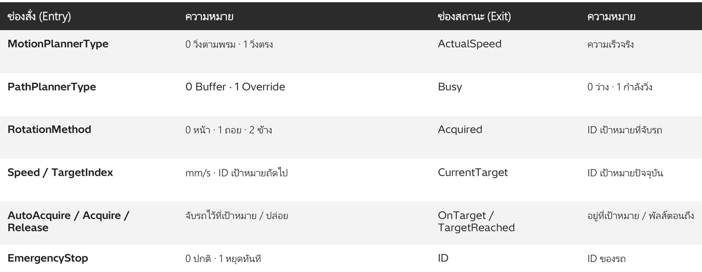
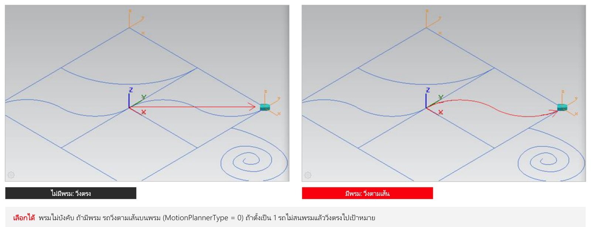

08. AGV
วัตถุประสงค์การเรียนรู้
- เปิด study แบบ Line Simulation Mode (event-based) แล้ว Insert Component
- สร้าง AGV, AGV Target และ AGV Carpet (พรมนำทางตามเส้นโค้ง)
- สั่งรถด้วย Simulation Panel: Force ความเร็วและเป้าหมาย (TargetIndex = ID ไม่ใช่ชื่อ)
- เพิ่ม LiDAR บน KUKA_AGV และสั่งหยุดฉุกเฉินด้วย EmergencyStop
ให้รถ AGV วิ่งไปเป้าหมายด้วย signal ทีละขั้น รวม 12 ขั้น — ตั้งแต่เปิด study แบบ event-based สร้างรถ เป้าหมาย และพรม ไปจนถึงเซนเซอร์ LiDAR และการหยุดฉุกเฉิน
ภาพรวม: ให้รถ AGV วิ่งไปเป้าหมายด้วย signal
| ลำดับ | หัวข้อ | ทำอะไร |
|---|---|---|
| 01 | Line Simulation | เปิด study แบบ event-based |
| 02 | Create AGV | ให้ชิ้นส่วนเป็นรถ AGV |
| 03 | Create AGV Target | จุดหมายที่รถวิ่งไป |
| 04 | Create AGV Carpet | พรมนำทางรถวิ่งตามเส้น |
| 05 | Simulation Panel | Force ความเร็วและเป้าหมาย |
| 06 | Target ID | TargetIndex = ID ไม่ใช่ชื่อ |
| 07 | LiDAR | เซนเซอร์บน KUKA_AGV |
| 08 | EmergencyStop | สั่งรถหยุดทันที |
| 09 | Logic Block | ช่องสั่งและช่องสถานะของรถ |
สิ่งที่ต้องมี: Process Simulate 2502 · โฟลเดอร์
08_AGV · Library\ (5 ไฟล์ .cojt) · AGV_Step0 ถึง Step3 .psz
Workflow: 6 ช่วง
| ช่วง | งาน | ทำอะไร | ไฟล์ |
|---|---|---|---|
| 01 | 1: เปิดแบบ Line Sim | System Root, Open in Line Simulation Mode, Insert Component | Step0 |
| 02 | 2: AGV + Target | Set Modeling Scope, Create AGV, Create AGV Target | Step0 |
| 03 | 3: Carpet | Create AGV Carpet จากเส้นโค้ง | Step1 |
| 04 | 4: Drive AGV | Simulation Panel, Force, Play | Step2 |
| 05 | 5: LiDAR | เซนเซอร์บน KUKA_AGV | Step3 |
| 06 | 6: E-Stop | Force EmergencyStop | Step3 |
ใน study (อ่านจากไฟล์ใน PS 2502): 2 รถ AGV (AGV, KUKA_AGV) · 4 เป้าหมาย (AGV_Target_1 ถึง 4) · 49 signal (รถ 17 ต่อคัน + เป้าหมาย 5 ต่อจุด)
ให้รถ AGV วิ่งไปเป้าหมายด้วย signal ทีละขั้น รวม 12 ขั้น — ตั้งแต่เปิด study แบบ event-based สร้างรถ เป้าหมาย และพรม ไปจนถึงเซนเซอร์ LiDAR และการหยุดฉุกเฉิน
ภาพรวม: ให้รถ AGV วิ่งไปเป้าหมายด้วย signal
| ลำดับ | หัวข้อ | ทำอะไร |
|---|---|---|
| 01 | Line Simulation | เปิด study แบบ event-based |
| 02 | Create AGV | ให้ชิ้นส่วนเป็นรถ AGV |
| 03 | Create AGV Target | จุดหมายที่รถวิ่งไป |
| 04 | Create AGV Carpet | พรมนำทางรถวิ่งตามเส้น |
| 05 | Simulation Panel | Force ความเร็วและเป้าหมาย |
| 06 | Target ID | TargetIndex = ID ไม่ใช่ชื่อ |
| 07 | LiDAR | เซนเซอร์บน KUKA_AGV |
| 08 | EmergencyStop | สั่งรถหยุดทันที |
| 09 | Logic Block | ช่องสั่งและช่องสถานะของรถ |
สิ่งที่ต้องมี: Process Simulate · โฟลเดอร์
08_AGV · Library\ (5 ไฟล์ .cojt) · AGV_Step0 ถึง Step3 .psz
Workflow: 6 ช่วง
| ช่วง | งาน | ทำอะไร | ไฟล์ |
|---|---|---|---|
| 01 | 1: เปิดแบบ Line Sim | System Root, Open in Line Simulation Mode, Insert Component | Step0 |
| 02 | 2: AGV + Target | Set Modeling Scope, Create AGV, Create AGV Target | Step0 |
| 03 | 3: Carpet | Create AGV Carpet จากเส้นโค้ง | Step1 |
| 04 | 4: Drive AGV | Simulation Panel, Force, Play | Step2 |
| 05 | 5: LiDAR | เซนเซอร์บน KUKA_AGV | Step3 |
| 06 | 6: E-Stop | Force EmergencyStop | Step3 |
ใน study (อ่านจากไฟล์ตัวอย่าง): 2 รถ AGV (AGV, KUKA_AGV) · 4 เป้าหมาย (AGV_Target_1 ถึง 4) · 49 signal (รถ 17 ต่อคัน + เป้าหมาย 5 ต่อจุด)
ขั้นที่ 1: System Root แล้ว Open in Line Simulation Mode
- 1Welcome Page > System Root = ...\08_AGV\Library
- 2ปุ่มกลาง Open in Line Simulation Mode
- 3เลือก AGV_Step0_Insert_Component
- 4Open (โหลดราว 15 วินาที)
ขั้นที่ 2: Step0 มีชิ้นส่วน 5 ชิ้นจาก Library
- 1Modeling > Insert Component > Library
- 2AGV, AGV_Target, Carpet, KUKA_AGV, Lidar_sensor
- 3AGV กล่องสีฟ้า (0, 5000)
- 4KUKA_AGV สีเทา (0, -5000)
ขั้นที่ 3: Set Modeling Scope ก่อนปุ่ม Create AGV จึงกดได้
- 1Create AGV เป็นสีเทาเมื่อเลือกชิ้นธรรมดา
- 2แท็บ Modeling > Set Modeling Scope
- 3กลับแท็บ Control: Create AGV กดได้แล้ว
- 4ก่อน: เทา
- 5เลือก KUKA_AGV (ไอคอนเปลี่ยนเป็นเปิดแก้ไข)
ขั้นที่ 4: Create AGV ได้ Logic Block ของรถ
- 1ช่องสั่ง (Entries) MotionPlannerType, Speed, TargetIndex ...
- 2ช่องสถานะ (Exits) ActualSpeed, Busy, CurrentTarget ...
- 3OK
ขั้นที่ 5: Create AGV Target แล้วดู signal ที่สร้าง
- 1AGV_Target > Set Modeling Scope > Create AGV Target
- 2ID เลขประจำเป้าหมายใช้สั่งรถ
- 3KUKA_AGV_ 17 signal
- 4AGV_Target_ 5 signal
AGV Logic Block: ช่องสั่งและช่องสถานะ

ขั้นที่ 6: Create AGV Carpet ให้เส้นเป็นพรมนำทาง
- 1เลือก Carpet
- 2เส้น Line, Spline, Arc, Polyline (8 เส้น)
- 3Control > AGV > Create AGV Carpet
- 4"Carpet is now used as AGV carpet" > OK
ไม่มีพรม vs มีพรม: เส้นทางของรถต่างกัน

ขั้นที่ 7: Simulation Panel ใส่ signal ของรถ
- 1Control > Debug > Signals + Simulation Panel
- 2Ctrl+คลิก AGV_Speed, AGV_TargetIndex
- 3AGV_Busy, AGV_CurrentTarget (ดูสถานะ)
- 4รวม 4 signal
- 5ปุ่มแรก Add Signal to Viewer
ขั้นที่ 8: Force ความเร็ว 200 และเป้าหมาย 1 แล้ว Play
- 1ติ๊ก Forced
- 2AGV_Speed = 200 (mm/s)
- 3AGV_TargetIndex = 1
- 4ปุ่ม Play ใต้หน้าจอ 3D
- 5รถวิ่งตามพรมถึงเป้าหมาย
ระวัง: ดับเบิลคลิกช่อง Forced Value แล้วลบค่าเดิมก่อนพิมพ์ ไม่อย่างนั้นตัวเลขต่อท้าย (พิมพ์ 1 ได้ 10) Play ครั้งแรกมีข้อความ Simulation slider กด OK
ขั้นที่ 9: TargetIndex คือ ID ของเป้าหมาย ไม่ใช่เลขท้ายชื่อ
- 1AGV_Target_2.ID = 4
- 2AGV_Target_1.ID = 3
- 3AGV_Target_4.ID = 2
ขั้นที่ 10: LiDAR Sensor บน KUKA_AGV
- 1Detection range 1000 mm
- 2Coverage sector 120°
- 3Number of rays 20
- 4Fields
- 5Monitoring cases (ว่าง)
- 6สร้างใหม่: Control > Sensors > Create LiDAR Sensor
ขั้นที่ 11: Play: LiDAR วิ่งไปพร้อม KUKA_AGV
- 1KUKA_AGV + เส้นขอบ LiDAR ตอนเริ่ม
- 2พื้นที่สีเหลือง = รัศมีตรวจจับ วิ่งไปพร้อมรถ
- 3ถึงเป้าหมาย ID 1 ที่ (0, 0)
ขั้นที่ 12: EmergencyStop หยุดรถทันทีแล้ววิ่งต่อ
- 1KUKA_AGV_Speed 100 / TargetIndex 3
- 2ติ๊ก Forced ที่ KUKA_AGV_EmergencyStop คลิกช่องค่า: แดง = OFF / เขียว = ON
ไฟล์ในบทเรียนและสิ่งที่อยู่ในแต่ละไฟล์
| ไฟล์ | สิ่งที่มี |
|---|---|
| AGV_Step0_Insert_Component.psz | AGV, AGV_Target, Carpet, KUKA_AGV, Lidar_sensor (ยังไม่มี signal) |
| AGV_Step1_Create_AGV_and_AGV_Target.psz | + รถ 2 คันเป็น AGV + เป้าหมาย 3 จุด (signal 44 ตัว) |
| AGV_Step2_Create_AGV_Carpet.psz | + พรม + AGV_Target_4 (signal 49 ตัว) |
| AGV_Step3_Lidar_Sensor.psz | + LiDAR บน KUKA_AGV + ค่า Force ใน Simulation Panel |
| Library\ (5 ไฟล์ .cojt) | AGV, AGV_Target, Carpet, KUKA_AGV, Lidar_sensor |
เช็กลิสต์: ผู้เรียนทำได้ครบหรือยัง
| ข้อ | สิ่งที่ต้องทำได้ | ตรวจด้วย |
|---|---|---|
| 1 | เปิด study แบบ Line Simulation Mode | แถบล่างขึ้น Line Simulation Mode |
| 2 | Set Modeling Scope + Create AGV / AGV Target | signal ของรถและเป้าหมายใน Signals |
| 3 | Create AGV Carpet | "Carpet is now used as AGV carpet" |
| 4 | Force Speed / TargetIndex แล้ว Play | รถวิ่งตามพรมถึงเป้าหมาย |
| 5 | อ่าน ID ของเป้าหมาย | บอกได้ว่า TargetIndex 3 ไปจุดไหน |
| 6 | EmergencyStop ON / OFF | รถหยุดแล้ววิ่งต่อ |
ปัญหาที่พบบ่อยและวิธีแก้
| อาการ | วิธีแก้ |
|---|---|
| เมนู Open in Line Simulation Mode กดไม่ติด | ใช้ปุ่มกลางใต้ System Root ในหน้า Welcome |
| Create AGV / AGV Target สีเทา | เลือกชิ้นนั้นแล้ว Modeling > Set Modeling Scope ก่อน |
| พิมพ์ Forced Value แล้วได้ค่าผิด (1 เป็น 10) | ลบค่าเดิมก่อนพิมพ์ |
| รถวิ่งไปผิดจุด | TargetIndex คือ ID ดูค่า ID ใน Simulation Panel |
| กด Play แล้วไม่มีอะไรเกิด | ปิดหน้าต่าง Signals ที่บังปุ่ม Play / กด OK ข้อความ Simulation slider |
| LiDAR ไม่ทำให้รถหยุดเอง | ต้องมี Fields / Monitoring Cases จาก SICK · บทนี้สั่ง EmergencyStop ด้วยมือ |